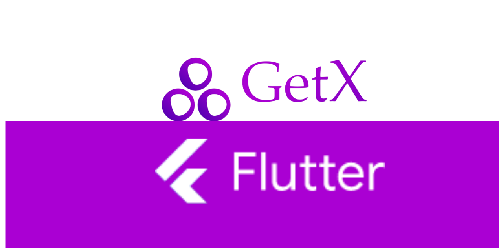
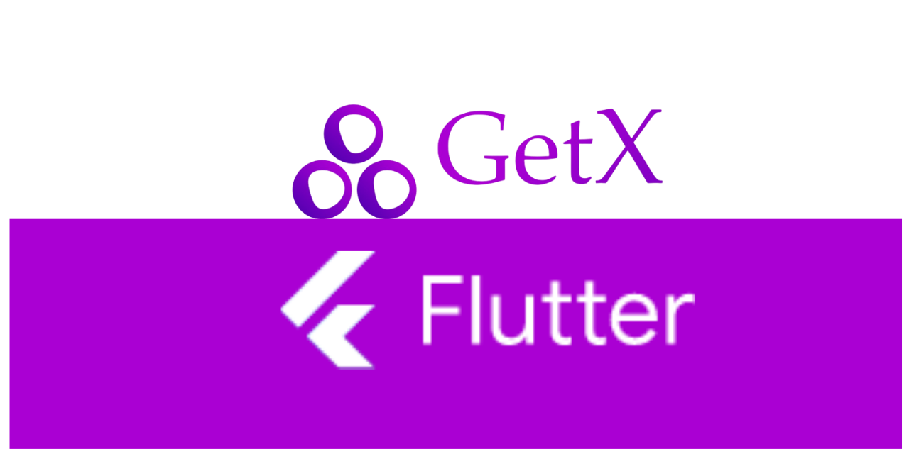

2021 - RESTAURANTAPP
As a freelance project, I developed a comprehensive Flutter application designed for managing meals, while also offering users the ability to search and filter meals based on their nutritional values.
The app provides users with the essential functionality to create, track, and search meals, ensuring a user-friendly experience that caters to their dietary preferences and nutritional needs.
 

The application was developed using the Flutter framework, known for its cross-platform compatibility and smooth user interfaces.
Users have the capability to create and manage their meals, including essential nutritional information.
The app is equipped with powerful search and filtering features, enabling users to find meals that match their dietary preferences and nutritional goals.
The user-friendly interface ensures an intuitive navigation experience, making it easy for users to interact with the app and manage their meals effectively.
The RESTAURANTAPP serves as an example of my proficiency in Flutter development and my commitment to providing practical and valuable solutions to clients.